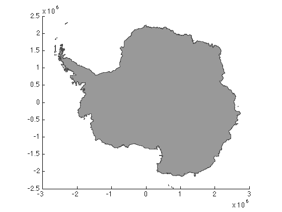
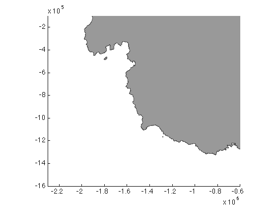
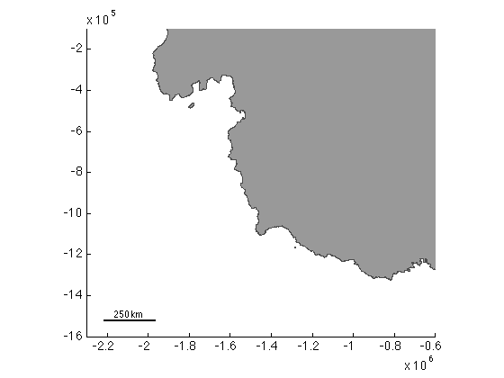
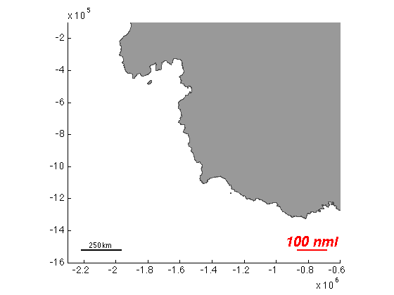

scalebarps documentation
scalebarps is part of Antarctic Mapping Tools for Matlab (Greene et al., 2017). Click here for a complete list of functions in AMT.
scalebarps places a graphical reference scale in polar stereographic units.
Contents
Syntax
scalebarps scalebarps(...,'length',ScaleLength) scalebarps(...,'location',LocationOnMap) scalebarps(...,'units',LengthUnits) scalebarps(...,'TextProperty',TextValue) [h_scalebar,h_scalebartext] = scalebarps(...)
Description
scalebarps places a graphical reference scale at the lower left-hand corner of a map. Length of the scale is determined automatically based on current extents of the map.
scalebarps(...,'length',ScaleLength) specifies the length of the scalebar. ScaleLength is in the specified units. If no units are specified, kilometers are assumed.
scalebarps(...,'location',LocationOnMap) specifies location of the scalebar on the map. Location can be
- 'southwest' or 'sw' (lower left) {default}
- 'northwest' or 'nw' (upper left)
- 'northeast' or 'ne' (upper right)
- 'southeast' or 'se' (lower right)
scalebarps(...,'units',LengthUnits) specifies length units as
- 'kilometers' or 'km' (default)
- 'miles' or 'mi'
- 'nautical miles' or 'nmi'
- 'meters' or 'm'
- 'feet' or 'ft'
- 'yards' or 'yd'
scalebarps(...,'TextProperty',TextValue) specifies properties of the scalebar's text label.
[h_scalebar,h_text] = scalebarps(...) returns a handle for the scalebar and a handle for the text label.
Examples
Let's place a few scalebars. Start by plotting the extents of the continent as patch objects with bedmap2:
bedmap2('patch coast','xy')
Now zoom in on the Amundsen sea:
axis(1000*[-2300 -600 -1600 -100])
Place a scalebar using automatic sizing:
scalebarps
Place a red scalebar with large bold italic text exactly 100 nautical miles long in the lower right-hand corner of the map:
scalebarps('color','red',... % make it red 'fontsize',20,... % embiggen the text 'fontweight','bold',... % put some meat on that text's bones 'fontangle','italic',... % lean in like MSNBC 'length',100,... % 100 units long. What units exactly? 'units','nmi',... % oh, nautical miles. Those units. 'location','se') % place it in the lower right hand corner.
Citing AMT
If this function or any other part of Antarctic Mapping Tools is useful for you, please cite the paper that describes AMT.
Greene, C. A., Gwyther, D. E., & Blankenship, D. D. Antarctic Mapping Tools for Matlab. Computers & Geosciences. 104 (2017) pp.151-157. doi:10.1016/j.cageo.2016.08.003.
Author Info.
The scalebarps function and supporting documentation were written by Chad A. Greene of the University of Texas at Austin's Institute for Geophysics (UTIG), November 2015.